A nonlinear element function  is assumed to be a function of the
problem variables 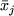, a subset of the overall variables
is assumed to be a function of the
problem variables 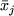, a subset of the overall variables  .
Suppose that
.
Suppose that  has 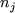 components. Then one can consider
the nonlinear element function
to be of the structural form
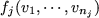, where we assign
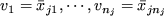. The elemental variables
for the element function 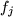 are the variables 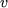 and, while we
need to associate the particular values
has 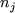 components. Then one can consider
the nonlinear element function
to be of the structural form
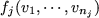, where we assign
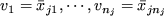. The elemental variables
for the element function 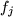 are the variables 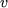 and, while we
need to associate the particular values  with
with  , it is
the elemental variables which are important in defining the character
of the nonlinear element functions.
, it is
the elemental variables which are important in defining the character
of the nonlinear element functions.
As an example, the first nonlinear element function
for a particular problem might be
The example may be used to illustrate a further point. Although 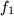
is a function of three variables, the function itself is really only
composed of two independent parts; the product of
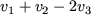 with  , or, if we write
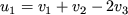
and
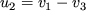, the product of
, or, if we write
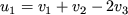
and
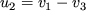, the product of  with 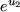. The
variables
with 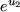. The
variables  and
and  are known as internal variables
for the element function. They are obtained as linear
combinations of the elemental variables. The important feature as
far as an optimization procedure is concerned is that each nonlinear
function involves as few internal variables as possible, as this
allows for compact storage and more efficient derivative
approximation.
are known as internal variables
for the element function. They are obtained as linear
combinations of the elemental variables. The important feature as
far as an optimization procedure is concerned is that each nonlinear
function involves as few internal variables as possible, as this
allows for compact storage and more efficient derivative
approximation.
It frequently happens, however, that a function does not have useful
internal variables.
For instance, another element function
might have structural form
In general, there will be a linear transformation
from the elemental variables to the internal ones. For example in
(2.6), we have